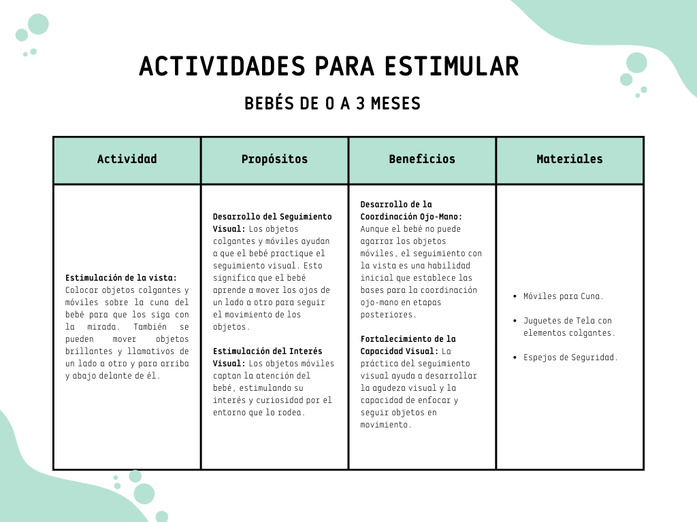
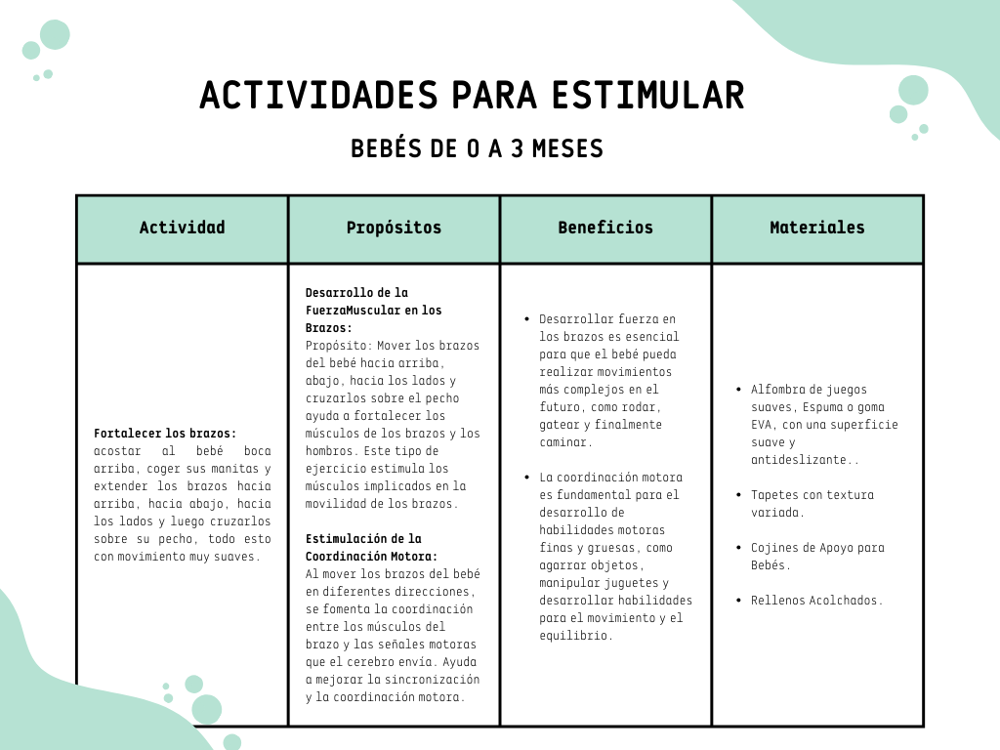

Necesidades del recién nacido
Alimentación
Leche Materna o Fórmula: La leche materna es el mejor alimento para un recién nacido, ya que proporciona todos los nutrientes necesarios y anticuerpos que ayudan a proteger al bebé contra infecciones. Si la lactancia materna no es posible, las fórmulas infantiles son una alternativa adecuada.
Sueño
Horas de Sueño: Un recién nacido duerme entre 16 y 17 horas al día, aunque no de forma continua. Sus patrones de sueño son erráticos y se despiertan con frecuencia para alimentarse.
Higiene
Cambio de Pañales: Los pañales deben cambiarse con frecuencia, aproximadamente cada 2-3 horas o cuando estén sucios
Cuidado de la Piel
Hidratación: La piel de los recién nacidos es muy sensible, por lo que se recomienda usar productos suaves y específicos para bebés.
Estimulación y Vínculo
Contacto Físico: El contacto piel a piel y el cariño son esenciales para el desarrollo emocional del bebé.
Control Médico
Visitas al Pediatra: Es importante seguir el calendario de visitas al pediatra para monitorear el crecimiento y desarrollo del bebé, así como para administrar las vacunas necesarias.
Seguridad
Entorno Seguro: Asegurarse de que el entorno del bebé esté libre de peligros, como objetos pequeños que puedan ingerir, y garantizar que los productos de limpieza y medicamentos estén fuera de su alcance.
Estimulación temprana
Se refiere a un conjunto de actividades y ejercicios diseñados para favorecer el desarrollo físico, cognitivo, emocional y social de los niños desde el nacimiento hasta los seis años. Estas actividades aprovechan la capacidad de aprendizaje y adaptación del cerebro infantil durante los primeros años de vida, cuando es más receptivo y flexible.
Objetivos de la estimulacion temprana
Desarrollo cognitivo
Promover habilidades como la memoria, la atención, el lenguaje, y la resolución de problemas.
Desarrollo motor
Fomentar habilidades motoras gruesas (caminar, correr) y finas (agarrar objetos, dibujar).
Desarrollo emocional y social
Ayudar a los niños a desarrollar la autoestima, la confianza y habilidades sociales como la comunicación y la empatía.
Desarrollo sensorial
Estimular los sentidos (vista, oído, tacto, gusto, olfato) para mejorar la percepción y la interacción con el entorno.
Guía para estimular a bebes de 0 a 3 meses
Durante los primeros meses de vida, los bebés experimentan un rápido crecimiento y desarrollo en todas las áreas: física, cognitiva, emocional y social. En esta etapa tan crucial, la estimulación adecuada puede sentar las bases para un desarrollo integral y saludable.
Esta guía está diseñada para proporcionar a los padres y cuidadores una serie de actividades y consejos prácticos que pueden realizarse de manera sencilla en el hogar. Cada actividad está pensada para aprovechar los momentos cotidianos, fortaleciendo el vínculo afectivo y promoviendo el bienestar del bebé.

